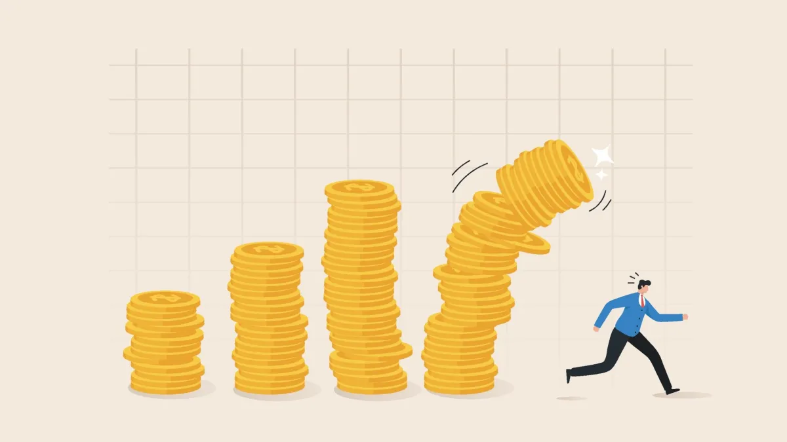

El mercado de valores es un sistema complejo con varios términos y conceptos importantes. Aquí te explicamos algunos de los más fundamentales:
Conceptos fundamentales
- Acciones: Las acciones de una empresa representan la propiedad parcial de dicha empresa. Cuando una empresa decide abrirse al mercado de valores y cotizar en bolsa, emite acciones que representan la propiedad de una fracción de la empresa. Los inversores pueden comprar estas acciones, convirtiéndose así en accionistas y obteniendo derechos sobre los activos y las ganancias de la empresa proporcionalmente a la cantidad de acciones que poseen. El valor de estas acciones, por lo tanto, determina el valor de la empresa. En base a esto, las 10 empresas más valiosas actualmente son:
- Bonos: Los bonos son instrumentos financieros de deuda emitidos por empresas o gobiernos. Al adquirir un bono, el comprador está prestando dinero al emisor a cambio de un pago periódico de intereses y la devolución del capital invertido al vencimiento del bono. Esencialmente, los bonos son una forma en que las entidades pueden obtener financiamiento al prometer pagar intereses y reembolsar el capital en el futuro. Son considerados inversiones relativamente seguras, ya que ofrecen pagos predecibles de intereses y tienen una fecha de vencimiento establecida.
- Índices Bursátiles: Los índices bursátiles son herramientas que representan el rendimiento de un conjunto de acciones seleccionadas en un mercado financiero específico. Estos índices proporcionan una medida general del movimiento del mercado, ya que siguen el precio de las acciones de empresas representativas dentro de un sector, industria o mercado en particular. Son utilizados por inversores y analistas para evaluar el rendimiento del mercado en su conjunto y para comparar el rendimiento de carteras de inversión con el mercado de referencia.
| Empresa | Valor de la Acción (USD) | Valor Total (USD, billions) |
|---|---|---|
| Microsoft | $414,11 | $3.080 |
| Applet | $188,32 | $2.910 |
| Saudi Aramco | $3,287.93 | $1.981 |
| Alphabet Inc. (Google) | $147,22 | $1.820 |
| Amazon | $168,84 | $1.760 |
| NVIDIA | $696,41 | $1.720 |
| Meta Platforms Inc. (Facebook) | $496,50 | $1.198 |
| Berkshire Hathaway | $397,49 | $859,63 |
| Eli Lilly and Company | $735,68 | $698,39 |
| Tesla | $189,56 | $593,98 |